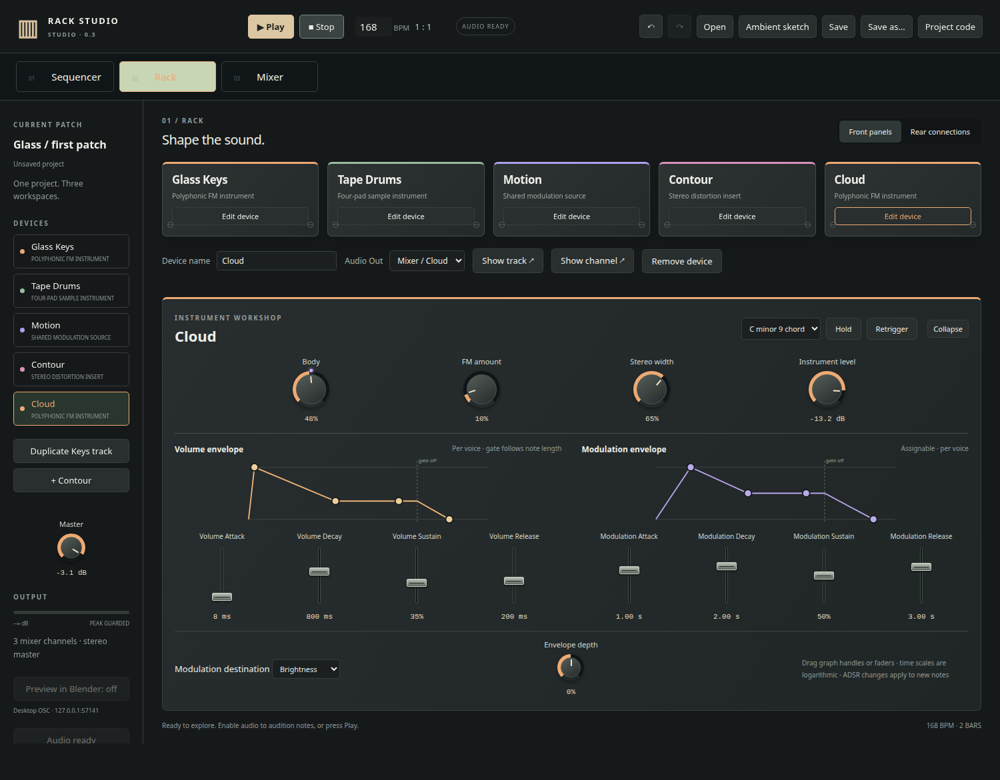

Tracker sequencer
Sequence notes, note-off events, velocity, and indexed parameter changes. Song mode arranges patterns into a full piece.
01C-37F...02-----1203G#340...
GENERATIVE MUSIC WORKSTATION · 0.12
A desktop DAW built on SuperSonic. It is designed for building instruments, sequencing events, and sending those events to Blender.

RACK / INSTRUMENTSWHY IT EXISTS
Generant is part of my personal creative toolkit. I wanted a DAW running on SuperSonic that I could use to build my own instruments, and I wanted to work more deeply with OSC. Generant can sequence events that are sent to Blender and baked into a timeline.
THE SYSTEM
01 / 03Sequence notes, note-off events, velocity, and indexed parameter changes. Song mode arranges patterns into a full piece.
Build instruments from SuperSonic synthdefs. Use LFOs, envelopes, gates, scales, VCAs, and effects as devices and connections.
Send note, control, and marker events over OSC. The bridge can apply them live or bake them into Blender animation data.
INTERFACE VIEWS
02 / 03Click the screenshot to open it fullscreen.
GENERANT → BLENDER
The OSC Score Bridge connects Generant to Blender. Visuals do not have to be driven only by FFT analysis: a note-on, note-off, knob turn, envelope value, or arbitrary marker such as /song/part1 can trigger an object, light, camera, or material.
START HERE
Clone the repository, install the Electron dependencies, and start the app. The README documents the current instruments, effects, SuperSonic files, OSC output, and Blender bridge.